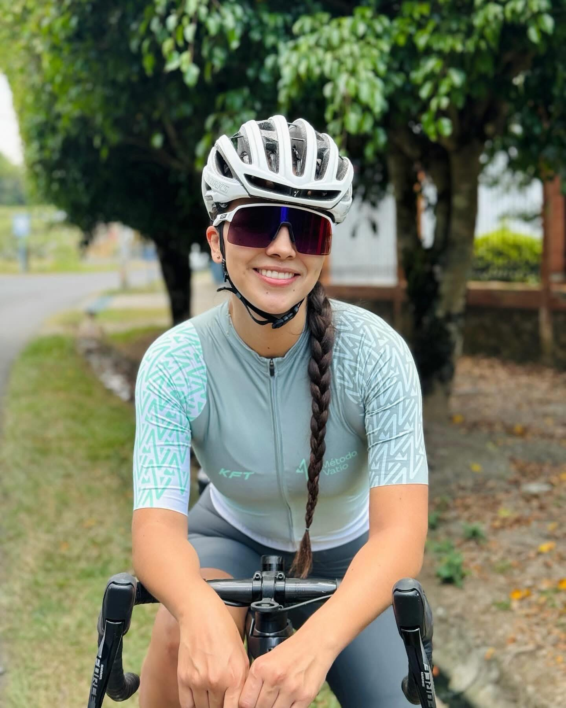
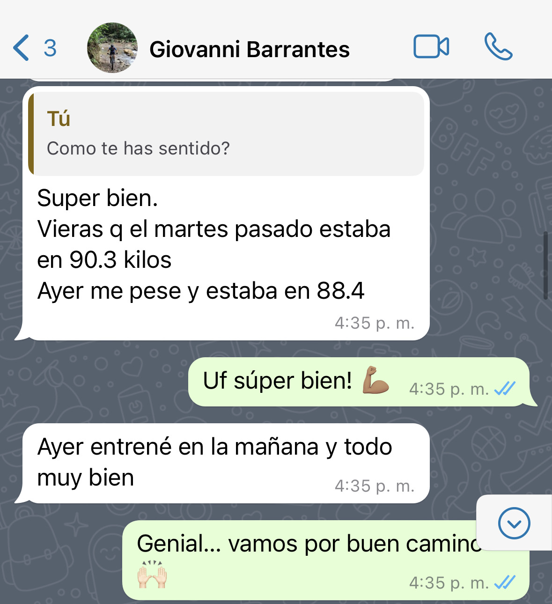
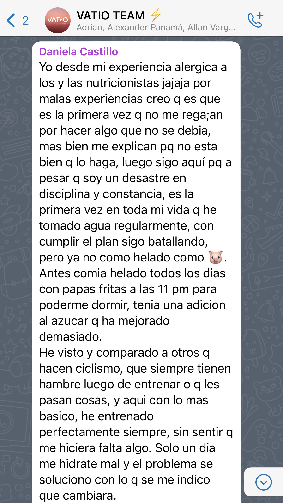
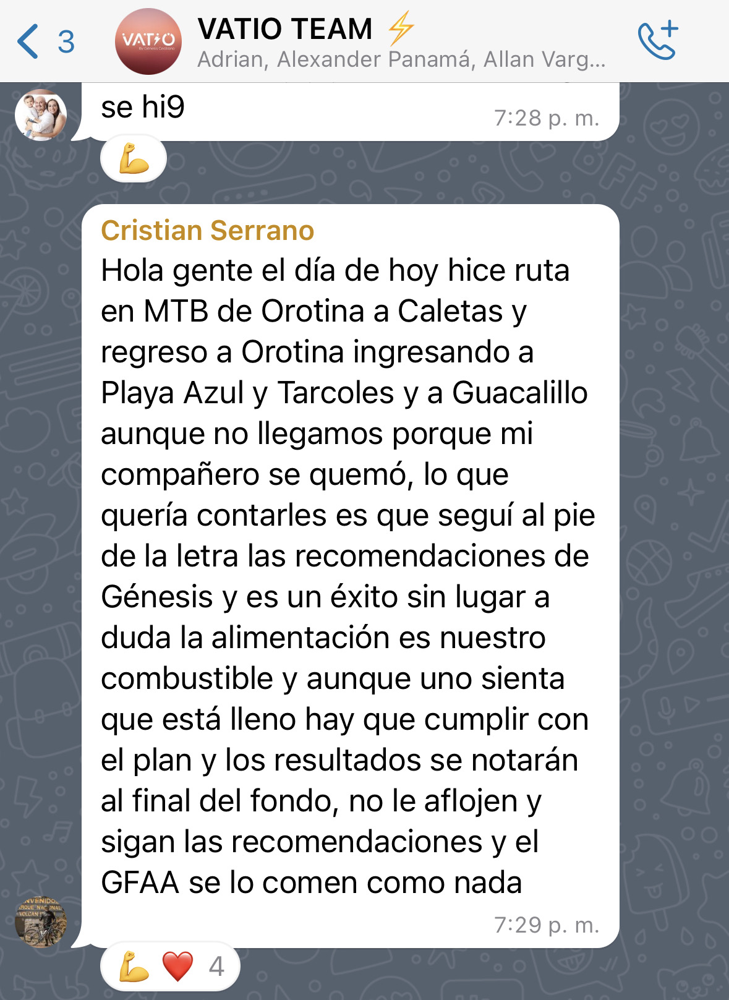
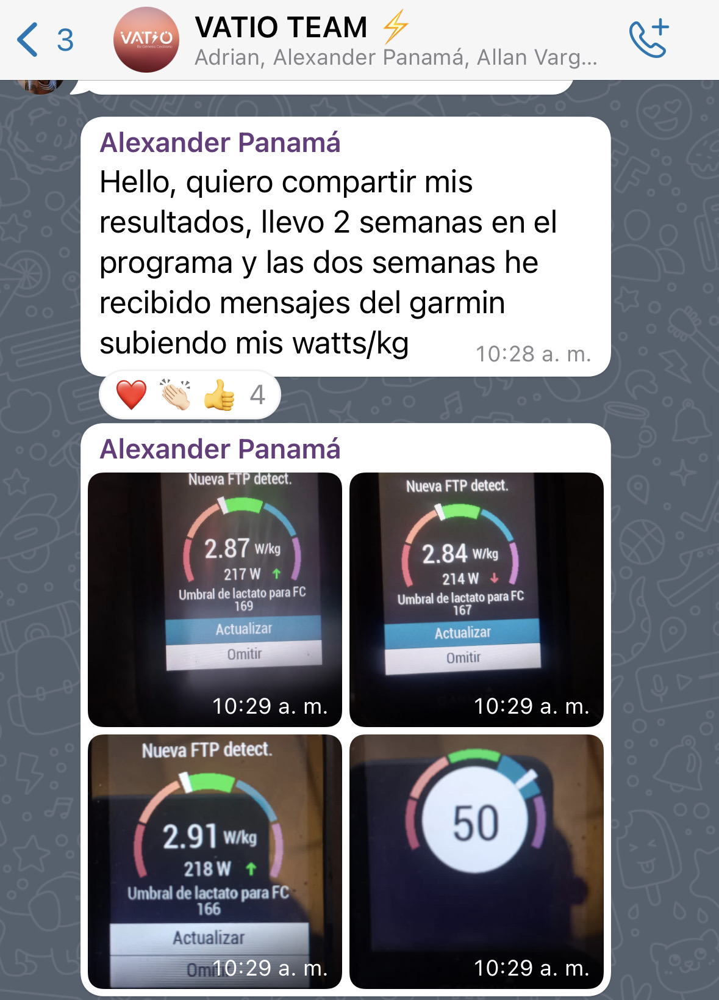
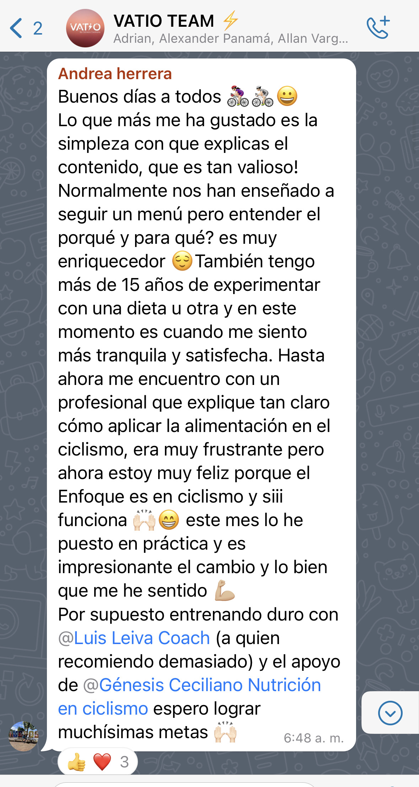
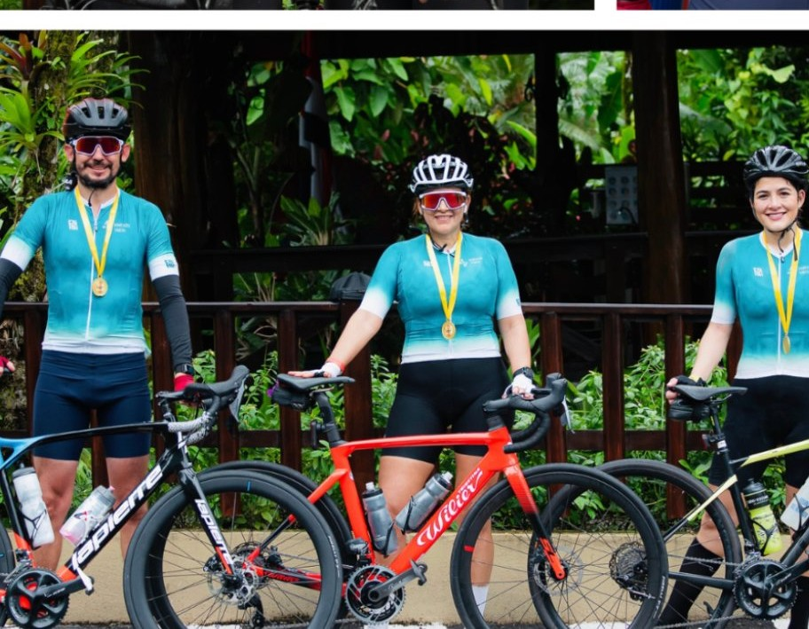
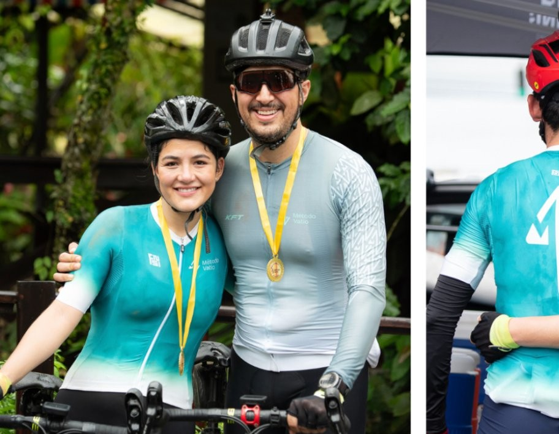
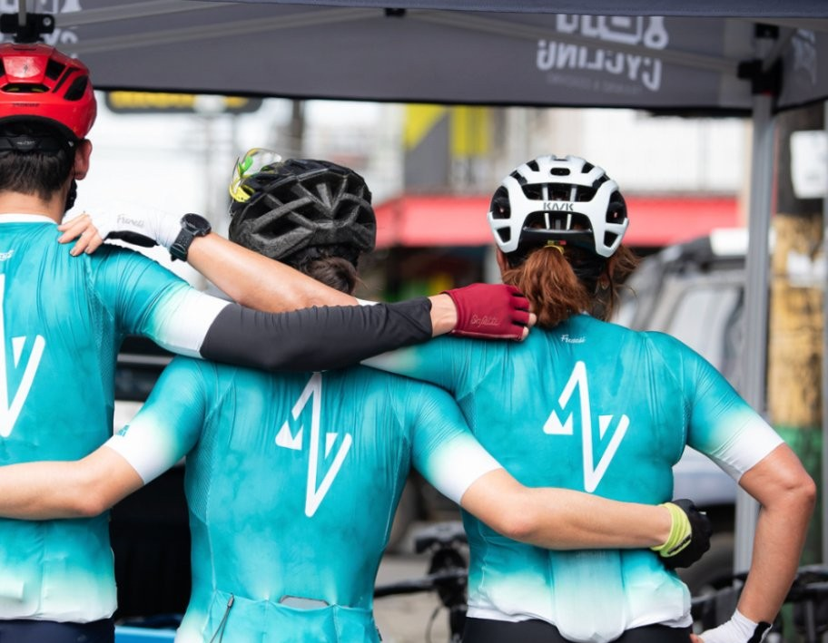
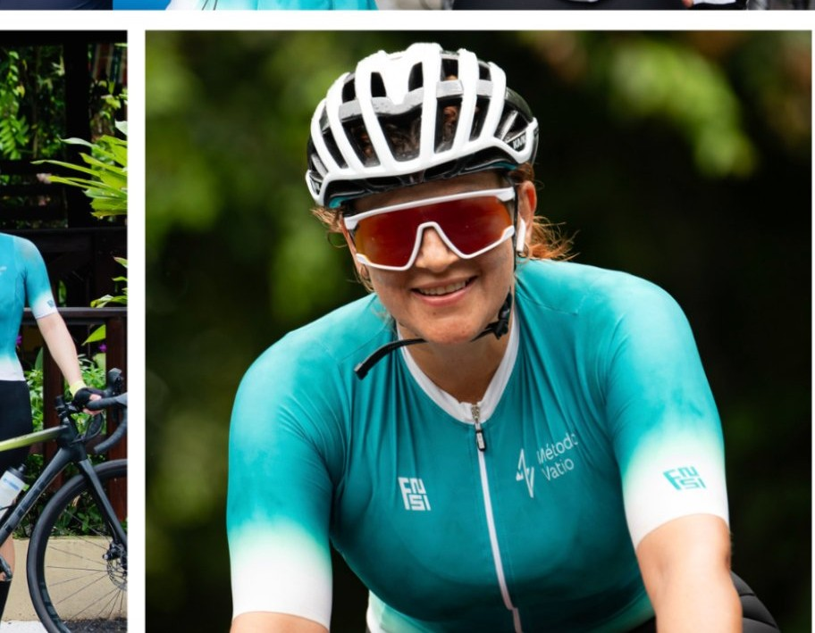

Guía de preparación
para la llamada
Ciclista, felicidades por agendar tu evaluación gratuita. Esta videollamada está diseñada específicamente para analizar tu situación, objetivos y metas personales. Te explicaremos cómo Génesis puede ayudarte a alcanzar tus objetivos con el programa Método Vatio.
Indicaciones importantes
Para que aproveches al máximo esta oportunidad y podamos darte una sesión de calidad, por favor toma en cuenta lo siguiente.
Mira este video antes de tu llamada
8 minutos para entender todo lo que necesitas saber antes de conversar con nuestro equipo.

Importante: este video resume los conceptos clave del Método Vatio y responde la mayoría de las dudas más comunes antes de iniciar la evaluación.
Sobre Génesis Ceciliano
Nutricionista profesional, ciclista y creadora del Método Vatio.

Génesis es nutricionista profesional y ciclista, fundadora de Nutrición en Ciclismo y creadora del Método Vatio, una metodología que une evidencia científica y experiencia real en la bicicleta. En los últimos años, ha acompañado a más de 400 ciclistas de Latinoamérica a perder grasa, mejorar potencia y optimizar su rendimiento con estrategias claras y aplicables a la vida real.
El Método Vatio nace de años de estudio en nutrición deportiva y de su propia trayectoria como ciclista. Cada protocolo ha sido validado en ruta con ciclistas de distintos niveles, convirtiéndolo en un sistema práctico y altamente efectivo. Génesis comprende los retos reales del ciclista y ofrece un enfoque directo, estratégico y orientado a resultados medibles.
Preguntas frecuentes
Toca cada pregunta para ver la respuesta.
Testimonios de ciclistas que aplicaron el Método Vatio
Resultados reales de ciclistas que siguieron el programa: pérdida de grasa, mejoras de potencia y cambios sostenibles en su rutina.











Resultados en competencia, validados en ruta — el equipo que vive el Método Vatio cada semana.
Tu checklist antes de la llamada
Marca cada punto a medida que lo completes. Te ayudará a llegar a la sesión con total claridad.